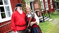

Sven Birger Grahn
Leg. läkare, Musiker, Författare, Dataguru.
| Född: | 1946 Fjällbonäs 1:1, Arvidsjaurs fs, Arvidsjaurs sn. [1] |
|---|
| Vigsel: | 1968 Umeå, Umeå sfs, Umeå kn. |
|---|
| Levde: | 1973 Luleå, Luleå domkyrko fs, Luleå kn. [2] |
|---|
| Barn: |
|---|
| Joakim Grahn (1969 - ) |
| Ludvig Grahn (1971 - ) |
Noteringar
Birger Gran Data reg. 1986
Programutveckling på persondatorer, datasupport och datautbildning jämte försäljning av datorutrustning, tillbehör och programvaror. Även bokutgivning via "Förlag" Birger Gran Data.
Bibliografi
Hemmansägare Sven W. Grahn. Levnadsbeskrivning av Birger Grahn, 279 s, 2015-07-06
ISBN : 9789198255300
Krönika över Grahn/Norman-släkterna i Granbo, Arvidsjaur av Birger Grahn, 294 s. 2015-07-07
ISBN : 9789198255317
Från granars sus till stadens brus, självbiogrfi del 1 av Birger Grahn, 330 s, 2015-08-07
ISBN : 9789198255331
Amalgamsjuka i läkarpraktiken av Birger Grahn, 654 s 2015-12-22
ISBN : 9789198255324
Bouppteckningarna berättar av Birger Grahn, 317 s 2016/10/19
ISBN : 9789198255355
Läkare, datadoktor och spelman: självbiografi, del 2 av Birger Grahn, 198 s. 2016-12-22
ISBN : 9789198255348
Giftmordet i Glommersträsk 1824 av Birger Grahn, 214 s. 2017-03-08
ISBN : 9789198255362
www.vulkanmedia.se/catalogsearch/result/?q=birger+grahn
Personhistoria
| Årtal | Ålder | Händelse |
|---|
| 1946 |
|
Makan Kaisa (Caysa) Sisko N Ågren föds 1946 Finland |
| 1946 |
|
Födelse 1946 Fjällbonäs 1:1, Arvidsjaurs fs, Arvidsjaurs sn [1] |
| 1954 |
|
Fadern Sven Viktor Grahn dör 1954-12-02 Fjällbonäs 1:1, Arvidsjaurs fs, Arvidsjaurs sn [3] |
| 1968 |
|
Vigsel Kaisa (Caysa) Sisko N Ågren 1968 Umeå, Umeå sfs, Umeå kn |
| 1969 |
|
Sonen Joakim Grahn föds 1969 Umeå, Umeå sfs, Umeå kn [2] |
| 1971 |
|
Sonen Ludvig Grahn föds 1971 Umeå, Ålidhems fs, Umeå kn [2] |
| 1973 |
|
Levde Kaisa (Caysa) Sisko N Ågren 1973 Luleå, Luleå domkyrko fs, Luleå kn [2] |
| 1982 |
|
Modern Linda Augusta Linnéa Norman dör 1982-03-09 Granbo, Arvidsjaur, Arvidsjaurs kbfd, Arvidsjaurs kn [4] |
Dokument
Källor
| [1] | Mtl Sveriges befolkning 1950 |
| |
| | |
| [2] | Mtl Sveriges befolkning 1975 |
| |
| | |
| [3] | AL, DOR 52-60, FB, FS, SvBef 1950, VB, SDB7_02558804 |
| |
| | |
| [4] | RTB 82, SPAR 90, SDB7_03373133 |
| |
|
|
| Birger Grahn |
| |
|  |
| Birger och hans andra hustru Siv. |
|
{kind=link}
{kind=link}